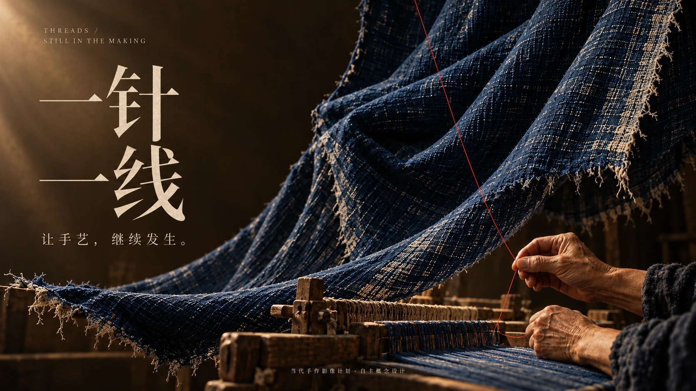
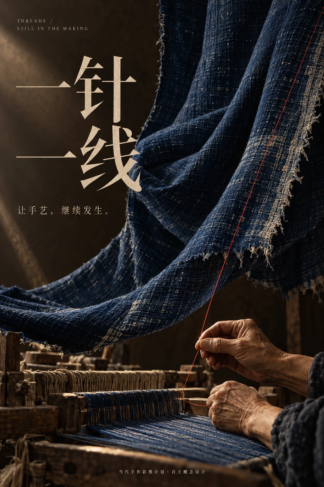
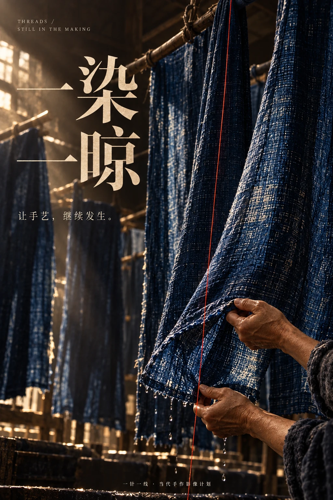
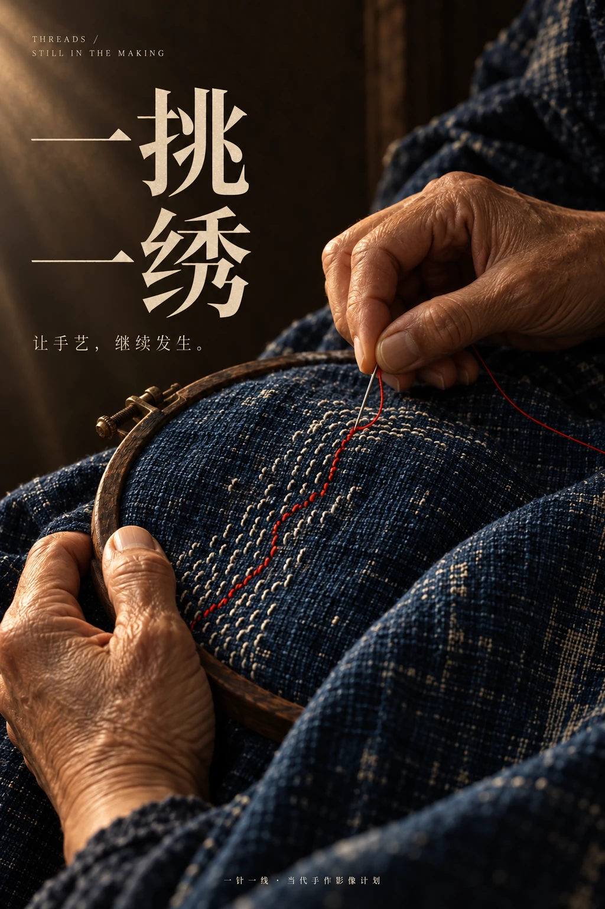

CULTURAL CAMPAIGN / EDITORIAL ART DIRECTION
让手艺的价值回到手、材料与动作。靛蓝织物是画面的主体，一条朱红色线把织、染、绣的过程串联起来。




保留纤维的毛边、布面的细密纹理与手部皮肤，让观者先感受到制作所需的时间和触感。
朱红色线与靛蓝形成有限而明确的对比。宋体标题沿用同一行距、大小关系与留白位置。
从织物整体、染晾现场到针脚近景逐步靠近。每张海报独立成立，也能组合成连续的文化传播序列。